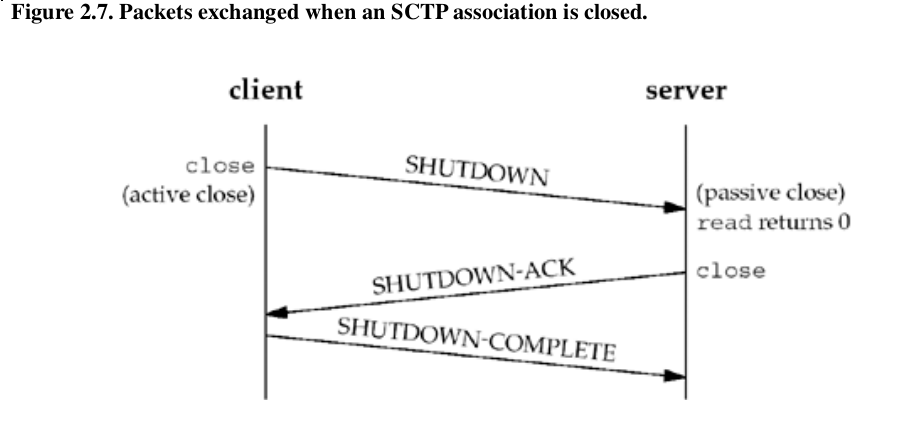

Overview of TCP/IP protocols.

TCP
Three-Way Handshake
Packets exchanged when a TCP connection is closed.
TCP State Transition Diagram

TIME_WAIT State
Time: 2MSL
Reasons:
- To implement TCP's full-duplex connection termination reliably
- To allow old duplicate segments to expire in the network
SCTP
SCTP four-way handshake
Packets exchanged when an SCTP association is closed

SCTP does not permit a "half-closed" association, does not have a TIME_WAIT state.
SCTP State Transition Diagram
Socket Pair
- TCP: the local IP address, local port, foreign IP address, and foreign port
- SCTP: a set of local IP addresses, a local port, a set of foreign IP addresses, and a foreign port
Headers
IPv4 Header
IPv6 Header
Buffer Sizes and Limitations
- The maximum size of an IPv4 datagram is 65,535 bytes, including the IPv4 header.
- The maximum size of an IPv6 datagram is 65,575 bytes, including the 40-byte IPv6 header.
- Many networks have an MTU which can be dictated by the hardware.
- Ethernet MTU: 1500 bytes
- point-to-point links using the Point-to-Point Protocol (PPP): configurable MTU
- Older SLIP links often used an MTU of 1,006 or 296 bytes.
- The minimum link MTU for IPv4 is 68 bytes (maximum-sized IPv4 header 60 and minimum-sized fragment).
- The minimum link MTU for IPv6 is 1,280 bytes.
- he smallest MTU in the path between two hosts is called the path MTU.
- minimum reassembly buffer size: IPv4 576 bytes, IPv6 1500 bytes
- TCP has a maximum segment size (MSS) that announces to the peer TCP the maximum amount of TCP data that the peer can send per segment.
- SCTP keeps a fragmentation point based on the smallest path MTU found to all the peer's addresses.
Note: Pv6 payload length field does not include the size of the IPv6header, while the IPv4 total length field does include the header size.
Retransmission
- Positive Acknowledgement
- Negative Acknowledgment
- Selective Acknowledgment
- Cumulative Acknowledgment
Exercise
2.1
version 0-1: Reserved
version 2-3: Unassigned
version 5: Internet Stream Protocol
2.2
2.3
The minimum reassembly buffer size for IPv4 is 576, it minus the 20-byte IPv4 header and minus the 20-byte TCP header is 536
2.4
2.5
Token ring host can't send packets more than 1460 bytes of data, because peer MSS was 1460. Ethernet host can send no more than 4096 bytes data, but it's MTU is 1500 bytes, it will not exceed the MTU of the outgoing interface (the Ethernet) to avoid fragmentation. There for the max length of data is 1460 (1500-20-20)
2.6
89
2.7
A selective acknowledgment only indicates that the data covered by the sequence numbers reflected in the selective acknowledgment message was received. Only a cumulative acknowledgment says that the data up to and including the sequence number in the cumulative acknowledgment message was received. When freeing data from the send buffer based on a selective acknowledgment, the system may only free the exact data that was acknowledged, and not any before or after the selective acknowledgment.
Comments